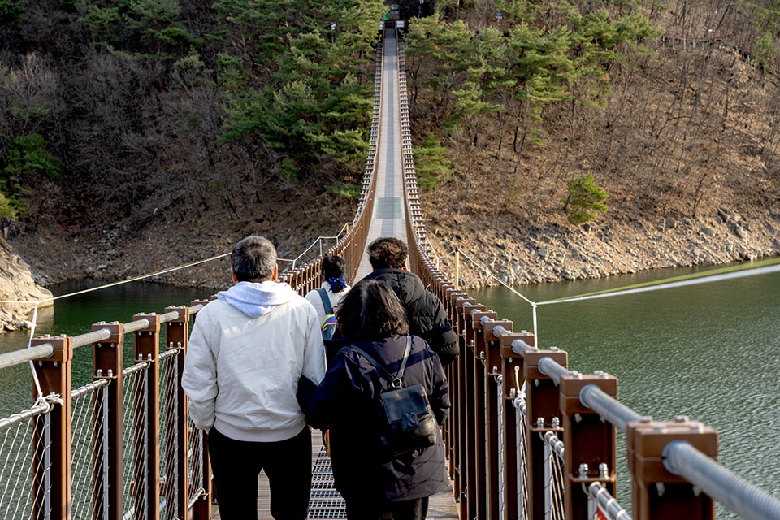
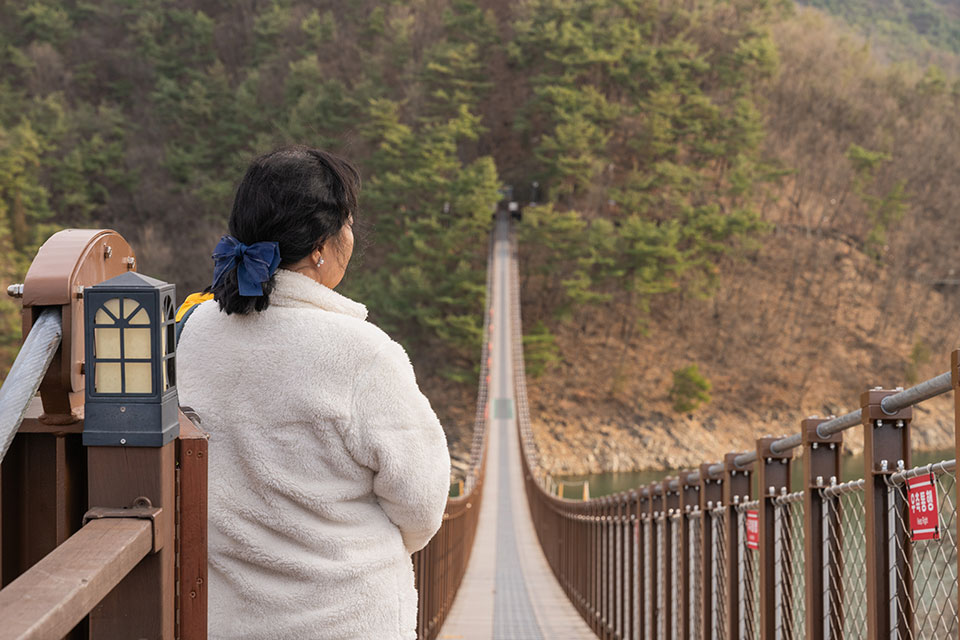
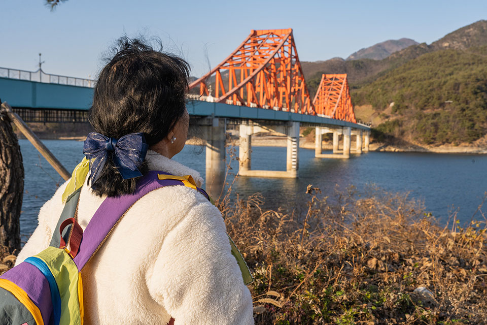
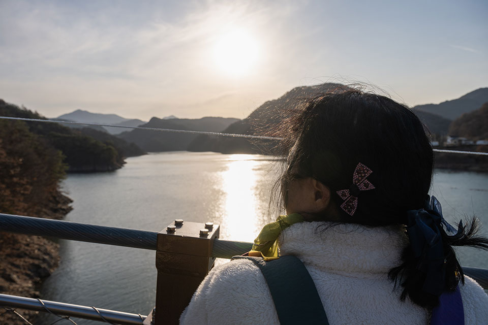

글. 편집실
사진.홍영기
호기심으로 시작된 도박에 삶의 터전까지 잃었던 지영 씨(가명). 절망의 시간을 건너 회복의 길에 들어선 그녀는 동료들과 함께 다시 출렁다리를 찾았다. 흔들리는 다리 위에서 과거의 집착과 고통을 내려놓으며, 새로운 삶으로 나아가겠다는 다짐과 조심스러운 희망을 품었다.

“4년 전에 큰 수술을 했었는데 그때 어지러워서 제대로 보지도, 걷지도
못하고 왔어요. 그 이후 회복하며 걸을 수 있는 것에 감사했고, 내 다리로
다시 출렁다리를 걷고 싶어서 이 장소를 선택하게 된 거예요.“
건강을 되찾은 후 출렁다리를 건너며, 지영 씨는 오랫동안 숙제처럼 남아
있던 다짐을 해낸 것 같아 뿌듯함을 느꼈다. 발아래로 펼쳐진 계곡과
하늘을 가로지르는 다리를 천천히 건너며 지난 시간 동안 자신이 얼마나
멀리 와 있는지 실감했다. 그녀의 곁에는 강원랜드 마음채움센터에서
단도박을 시작하고, 정선 도박중독회복센터에서 함께 지내며 버텨 온
동료들이 있었다. 처음에는 ‘중독’이라는 같은 상처로 모였지만, 서로의
이야기를 털어놓고 단도박 모임과 정기 만남을 이어가며 서로의 회복을
지지해 주는 든든한 동료가 되었다. 혼자서는 견디기 힘든 순간에도 이들이
있었기에 포기하지 않을 수 있었고, 치료 이후에도 취미 활동과 일상을
함께 나누는 사이로 이어졌다.
출렁다리 위에서 함께 사진을 찍고 서로를 격려하는 동료들을 바라보며,
지영 씨는 더 이상 모든 걸 혼자 감당하려 했던 과거의 자신이 아님을
깨달았다. 이제는 함께 걷는 사람들이 있고, 힘들 때 가장 먼저 떠올리는
이들이 곁에 있었다.

지영 씨를 카지노로 이끈 것은 강원랜드에 대한 호기심이었다. 여행 중
”구경만 하자“는 가벼운 마음으로 찾은 곳에서 “한 번만 해보자”로 시작한
도박은 17년이라는 긴 세월로 이어졌다.
사업으로 번 돈을 들고 서울과 강원도를 오가며, 이기면 더 하고 지면 잃은
돈을 되찾으려 다시 찾는 악순환 속에서 어느 순간 삶의 중심은 완전히
게임장으로 옮겨갔다. 결국 모든 것을 잃은 뒤 눈을 떴을 때, 그녀는
또다시 강원랜드 게임장 안에서 게임을 하고 있는 자신을 발견했다. 가족과
친구들은 떠났고, 남은 것은 빚과 게임장뿐이었다.
단도박을 결심하기 전까지 지영 씨는 단도박자 모임을 거듭 거절했다.
‘여기서 잃은 돈을 다시 벌기 전에는 단도박 안 한다’라는 집착은 오히려
도박을 더 깊게 만들었다.
마음채움센터와 주변의 권유로 마지못해 나간 모임에서, 그녀는 자신과
비슷하거나 더 극단적인 상황의 사람들을 만났다. 가족과 인연이 끊긴
사람, 빚에 쫓겨 잠잘 곳이 없는 사람, 단도박을 수차례 실패한 사람,
거짓말로 관계가 무너진 사람들의 고백을 들으며, 지영 씨는 ‘이 길의
끝’이 어떤 모습인지 선명하게 떠올릴 수밖에 없었다.
그날 밤, 모임에서 들은 이야기들이 머릿속을 떠나지 않았다. 지금 멈추지
않으면 돌이킬 수 없다는 절박함 속에서, 그녀는 다시는 예전으로 돌아가지
않겠다고 스스로와 약속했다.

단도박을 결심한 뒤 지영 씨는 마음채움센터의 ‘단도박을 하면 취업을
돕겠다’라는 제안을 받아들였고, 단도박 프로그램에 참여하며 게임장에서
점점 멀어졌다. 이후 센터 안내자로 일하며, 밤새 게임을 하고 나오는
사람들에게 다가가 도박으로 인한 문제와 단도박 지원에 대해 알리는
역할을 맡았다.
많은 이들이 지쳐 있거나 마음의 여유가 없어 낯선 말에 쉽게 귀를 열지
않았지만, 지영 씨는 “내 과거를 지금 겪고 있는 사람들”이라는 생각으로
포기하지 않았다. 자신의 이야기를 여러 번 들려주는 과정에서 자신이
얼마나 깊이 중독에 빠져 있었는지 객관적으로 바라보게 되었고, 누군가를
돕는 일이 결국 자신을 돕는 일이기도 하다는 것을 깨달았다.

단도박의 길 위에서도 유혹은 완전히 사라지지 않는다. 여전히 게임을
이어가는 사람들을 마주할 때면 마음이 흔들리지만, 그럴 때마다 지영 씨는
‘다시는 그곳으로 돌아가지 않겠다’라는 다짐으로 자신을 붙잡는다.
오랜 도박으로 청춘을 허비했다는 후회와 ‘조금만 더 일찍
그만뒀다면’이라는 아쉬움은 남아 있지만, 그녀는 망가졌던 과거의 자신과
조금씩 화해하려 노력하고 있다. 동료들과의 시간을 소중히 여기고, 매일
아침 거울 앞에서 “오늘도 게임장에 가지 않았어. 잘 버텼어.”라고
스스로에게 말을 건네며, 사람답게 행복하게 살고 싶다는 마음으로 하루를
쌓아가고 있다. 그래서 단도박을 망설이는 사람들에게 지영 씨는 이렇게
전하고 싶어 한다.
“하루라도 빨리, 더 늦기 전에 단도박을 시작하세요. 하루 일찍 시작할수록
인간답게 살 수 있습니다. 저처럼 17년을 낭비하지 마세요. 지금 이 순간이
가장 빠른 시작입니다.”